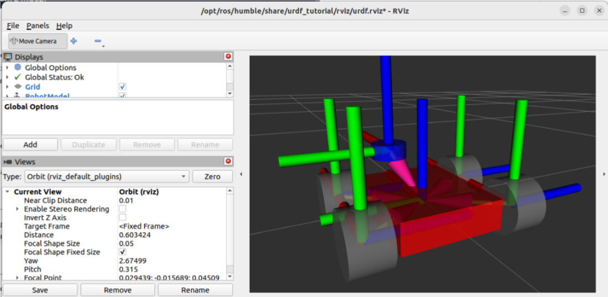
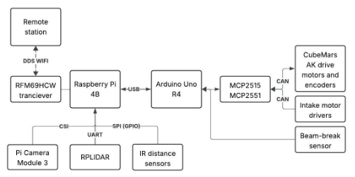
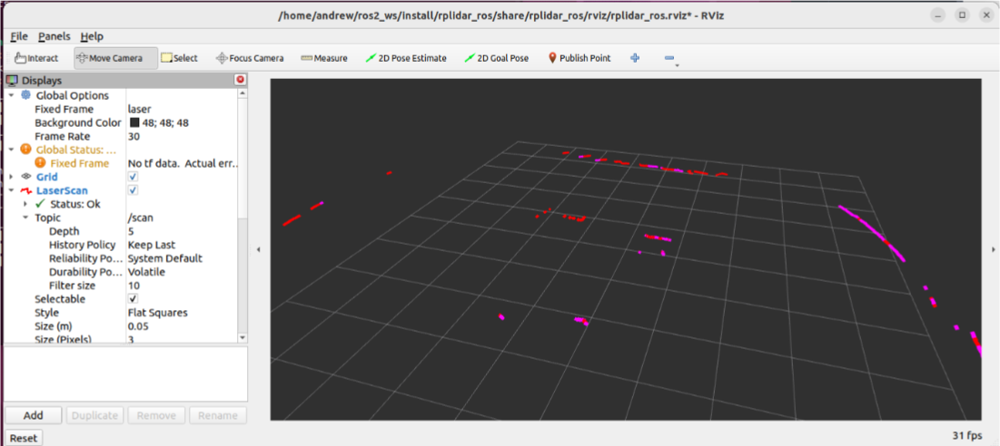

Mars Sample Return Rover
Autonomous Navigation, Kinematic Modeling & SLAM Simulation in ROS 2

URDF kinematic model configured with joint limits, inertial properties, and sensor mounts rendered in simulation.
System Overview
Designed and simulated an autonomous sample return rover intended for unstructured planetary terrain. Built on ROS 2 and Gazebo, the system integrates custom URDF robot description files, differential drive kinematics, and dynamic costmap generation for obstacle avoidance during autonomous waypoint navigation.
Autonomous State Machine & Decision Logic
System architecture detailing state transitions between global path planning, obstacle recovery behaviors, sample localization, and docking procedures.

High-level control loop and state machine architecture operating within the ROS 2 node hierarchy.
Perception & Spatial Mapping (RViz2)
Real-time environment reconstruction using simulated LiDAR point clouds and SLAM Toolbox to map unknown planetary obstacles and build Nav2 costmaps.

3D Point Cloud Generation
Dense point cloud visualization captured via simulated sensor package in RViz2.
Technical Highlights
URDF & Kinematics
Designed full URDF robot description with joint limits, inertial properties, and transmission tags for accurate physics simulation in Gazebo.
Nav2 Stack
Configured DWB local planner and Navfn global planner for precision path execution across simulated terrain gradients.
Sensor Fusion
Integrated wheel odometry, IMU data, and point cloud perception through `robot_localization` EKF nodes for pose estimation.